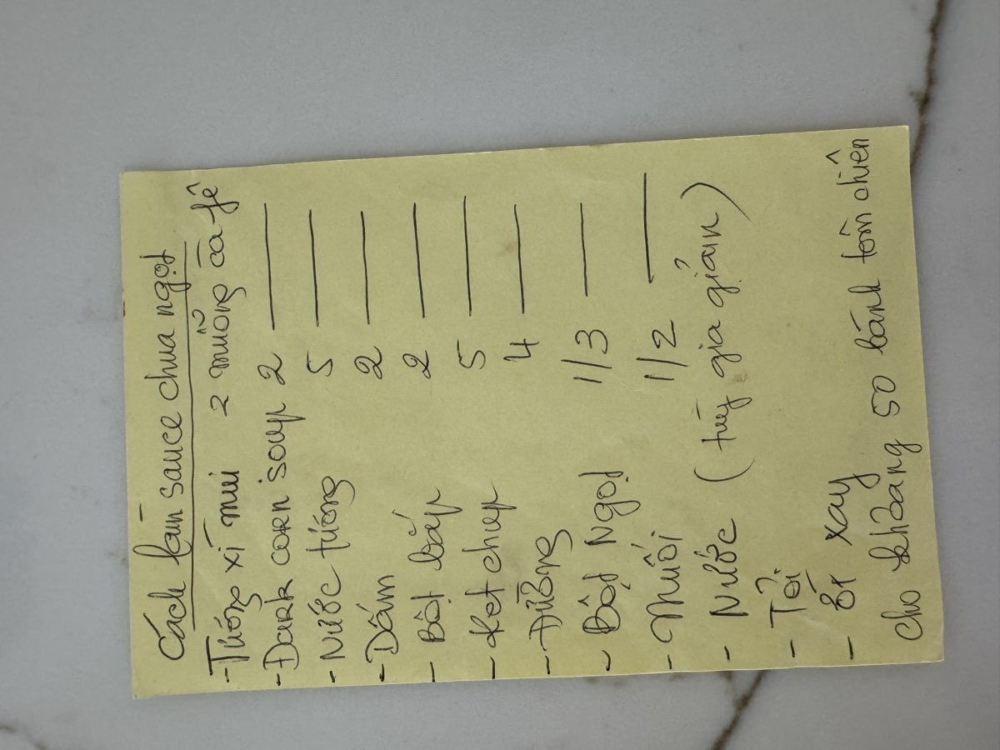

← Back to recipes
Sauce Chua Ngọt
Sweet & Sour Sauce
From Mẹ — Oanh
Nguyên liệu · Ingredients
- 2 teaspoons tương xì muội (plum sauce)
- 2 tablespoons dark corn syrup
- 5 tablespoons soy sauce (nước tương)
- 2 tablespoons vinegar (dấm)
- 2 tablespoons cornstarch (bột bắp)
- 5 tablespoons ketchup
- 4 tablespoons sugar (đường)
- ⅓ teaspoon MSG (bột ngọt)
- ½ teaspoon salt (muối)
- Water, to taste (tùy gia giảm)
- 2–3 cloves garlic (tỏi), minced
- Ground chili (ớt xay), to taste
Cách làm · Instructions
- In a bowl, whisk together the cornstarch with a splash of water until smooth — this prevents lumps when you add it to the sauce later.
- Combine the plum sauce, dark corn syrup, soy sauce, vinegar, ketchup, sugar, MSG, and salt in a saucepan. Add water to adjust the consistency (tùy gia giảm — adjust to taste).
- Bring the mixture to a gentle boil over medium heat, stirring constantly. Add the minced garlic and ground chili.
- Stir in the cornstarch slurry. Keep stirring as the sauce thickens — it should become glossy and coat the back of a spoon nicely. If it's too thick, add a little more water.
- Taste and adjust the balance of sweet, sour, and salty.
- Serve warm alongside fried shrimp cakes (bánh tôm chiên) or other fried dishes. This batch makes enough for about 50 bánh tôm chiên.
Công thức gốc · Original handwritten recipe

❦
A recipe from Mẹ's kitchen